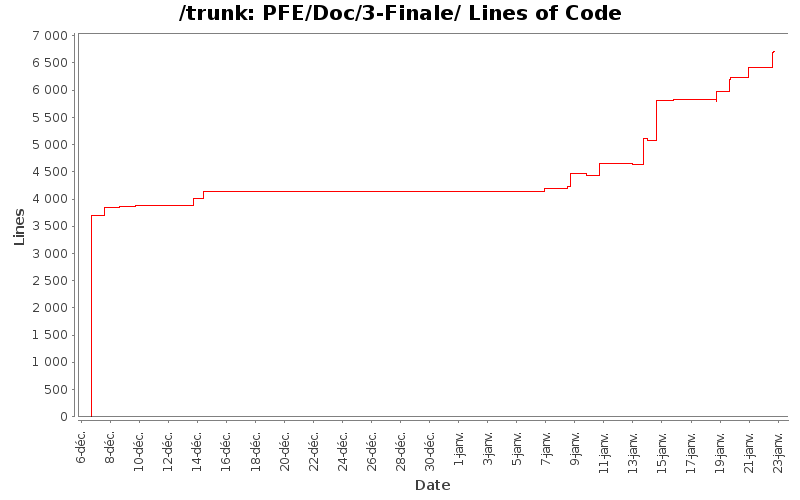

| Author | Changes | Lines of Code | Lines per Change |
|---|---|---|---|
| Totals | 42 (100.0%) | 7461 (100.0%) | 177.6 |
| fab0670312047 | 39 (92.9%) | 6914 (92.7%) | 177.2 |
| jpierre03@gmail.com | 1 (2.4%) | 316 (4.2%) | 316.0 |
| hoc5783 | 2 (4.8%) | 231 (3.1%) | 115.5 |
- Supression et déplacement des doublons
+ Ajout conclusion rapport de Synthèse
+ Correction orthographique
0 lines of code changed in 5 files:
+ Refonte de l'algo marcheur du rapport final pour le rendre plus claire
Cette partie ayant été faite au fil de l'eau, quelques nomenclatures ont changé
170 lines of code changed in 1 file:
+ Ajout de deux nouveaux tirages
(Excuse Abdou j'en ai refait encore un, car sinon on ne voyait pas de grosses
différences entre les 2 tirages)
+ intégration des graphiques dans le rapport final
268 lines of code changed in 1 file:
+ Ajout des données qui ont permit de construire le graphe.
181 lines of code changed in 1 file:
+ Relecture Synthese
+ Un peu de cosmetique
+ Mise en forme du code source
+ Reformatage des données pour les lire dans gnuplot
+ Ajout de réference dans Rapport Final
+ Rajout des résultats dans tous les rapports
16 lines of code changed in 1 file:
+ Ajout et correction de quelques fautes dans algo marcheur
27 lines of code changed in 1 file:
+ Ajout de résultat dans la partie algo marcheur
+ Travail de redaction sur l'algo du marcheur
329 lines of code changed in 1 file:
+ Travail sur algo marcheur
Abdou et Fabien
200 lines of code changed in 1 file:
+ Modif du titre de nos rapports.
+ Squelette du rapport final.
2 lines of code changed in 1 file:
+ Ajout de quelques contraintes de l'algo
+ Corrections
42 lines of code changed in 1 file:
+ Ajoutr des modif de code
+ modif rapport
740 lines of code changed in 4 files:
+ Quelques corrections sur l'algo du marcheur
70 lines of code changed in 1 file:
+ Ajout d'un dossier pour la sythèse
+ Codage de la dernière fonction de l'algo avec les medecins
+ Ajout de remarque dans le rapport
+ Ajout des tests Unitaires du projet et rédaction d'un test
519 lines of code changed in 4 files:
+ Test et petite correction
2 lines of code changed in 1 file:
+ Ajout de la partie de l'étude des 2 présentations.
229 lines of code changed in 1 file:
+ Ajout de précisions sur l'algo marcheurs
8 lines of code changed in 1 file:
+ relecture + commentaire & suggestions
(pas taper, cela m'a été demmandé)
316 lines of code changed in 1 file:
+ Reformulation de la spec du code ajout d'un diagramme de classe
(pas tout à fait juste pour le moment)
108 lines of code changed in 1 file:
+ relecture algo marcheur
52 lines of code changed in 1 file:
+ Ajout de spec structure
+ Début de code
149 lines of code changed in 1 file:
+ Ajout de cosmétique
+ Ajout de début de spec pour le marcheur
143 lines of code changed in 2 files:
+ Ajout d'un peu de cosmetique dans le rapport
By Fabien ;-)
30 lines of code changed in 1 file:
+ Deplacement d'un fichier
+ Ajout du début du code du marcheur
25 lines of code changed in 1 file:
+ Ajout de d'élement pour le marcheur
+ Début analyse des données
136 lines of code changed in 1 file:
+ Ajout ossature dernier rapport
+ travail sur le marcheur
+ Inclusion de la gestion des coûts dans le rapport
3699 lines of code changed in 7 files: